Importing phyloseq Data
The custom functions that read external data files and return an instance of the phyloseq-class are called importers. Validity and coherency between data components are checked by the phyloseq-class constructor, phyloseq() which is invoked internally by the importers, and is also the recommended function for creating a phyloseq object from manually imported data. The component indices representing OTUs or samples are checked for intersecting indices, and trimmed/reordered such that all available (non-) component data describe exactly the same OTUs and samples, in the same order.
See ?import after phyloseq has been loaded (library("phyloseq")), to get an overview of available import functions and documentation links to their specific doc pages, or see below for examples using some of the more popular import functions.
Loading included data
See the tutorial on included example data in phyloseq for more details.
The data command in the R language loads pre-imported datasets that are included in packages. For example, the “Global Patterns” dataset can be loaded into the R workspace with the following command.
data(GlobalPatterns)Examples
library("phyloseq"); packageVersion("phyloseq")## [1] '1.22.3'library("ggplot2"); packageVersion("ggplot2")## [1] '2.2.1'Define a default theme for ggplot graphics.
theme_set(theme_bw())phyloseq-ize Data already in R
Any data already in an R session can be annoated/coerced to be recognized by phyloseq’s functions and methods. This is important, because there are lots of ways you might receive data related to a microbiome project, and not all of these will come from a popular server or workflow that is already supported by a phyloseq import function. There are, however, lots of general-purpose tools available for reading any common file format into R. We also want to encourage users to create and share their own import code for special/new data formats as they arive.
For these reasons especially, phyloseq provides tools for constructing phyloseq component data, and the experiment-level multi-component data object, the phyloseq-class. These are the same functions used internally by the currently available importers.
?phyloseq
?otu_table
?sample_data
?tax_tableIf you can get the data into R, then you can get it “into” phyloseq.
Constructors:
otu_table- Works on any numericmatrix. You must also specify if the species are rows or columnssample_data- Works on anydata.frame. The rownames must match the sample names in theotu_tableif you plan to combine them as a phyloseq-objecttax_table- Works on any charactermatrix. The rownames must match the OTU names (taxa_names) of theotu_tableif you plan to combine it with a phyloseq-object.phyloseq- Takes as argument anotu_tableand any unordered list of valid phyloseq components:sample_data,tax_table,phylo, orXStringSet. The tip labels of a phylo-object (tree) must match the OTU names of theotu_table, and similarly, the sequence names of anXStringSetobject must match the OTU names of theotu_table.merge_phyloseq- Can take any number of phyloseq objects and/or phyloseq components, and attempts to combine them into one larger phyloseq object. This is most-useful for adding separately-imported components to an already-created phyloseq object.
Note: OTUs and samples are included in the combined object only if they are present in all components. For instance, extra “leaves” on the tree will be trimmed off when that tree is added to a phyloseq object.
Example - In the following example, we will define random example data tables in R, and then combine these into a phyloseq object. If you are able to get your data tables into R, then you can apply the following method to manually create phyloseq instances of your own data.
We’ll create the example vanilla R tables using base R code. No packages required yet.
# Create a pretend OTU table that you read from a file, called otumat
otumat = matrix(sample(1:100, 100, replace = TRUE), nrow = 10, ncol = 10)
otumat## [,1] [,2] [,3] [,4] [,5] [,6] [,7] [,8] [,9] [,10]
## [1,] 96 50 36 35 59 80 83 63 38 35
## [2,] 52 67 39 39 37 57 20 15 64 94
## [3,] 94 18 15 11 14 75 1 12 42 58
## [4,] 27 88 98 100 59 27 30 30 94 78
## [5,] 26 66 93 85 41 30 100 41 92 100
## [6,] 17 16 97 86 18 25 94 31 62 37
## [7,] 63 19 16 43 89 25 17 63 15 82
## [8,] 31 92 22 14 58 1 45 2 25 35
## [9,] 100 33 19 77 43 1 14 69 42 18
## [10,] 13 35 80 43 34 45 24 47 71 72It needs sample names and OTU names, the index names of the your own matrix might already have this.
rownames(otumat) <- paste0("OTU", 1:nrow(otumat))
colnames(otumat) <- paste0("Sample", 1:ncol(otumat))
otumat## Sample1 Sample2 Sample3 Sample4 Sample5 Sample6 Sample7 Sample8
## OTU1 96 50 36 35 59 80 83 63
## OTU2 52 67 39 39 37 57 20 15
## OTU3 94 18 15 11 14 75 1 12
## OTU4 27 88 98 100 59 27 30 30
## OTU5 26 66 93 85 41 30 100 41
## OTU6 17 16 97 86 18 25 94 31
## OTU7 63 19 16 43 89 25 17 63
## OTU8 31 92 22 14 58 1 45 2
## OTU9 100 33 19 77 43 1 14 69
## OTU10 13 35 80 43 34 45 24 47
## Sample9 Sample10
## OTU1 38 35
## OTU2 64 94
## OTU3 42 58
## OTU4 94 78
## OTU5 92 100
## OTU6 62 37
## OTU7 15 82
## OTU8 25 35
## OTU9 42 18
## OTU10 71 72Now we need a pretend taxonomy table
taxmat = matrix(sample(letters, 70, replace = TRUE), nrow = nrow(otumat), ncol = 7)
rownames(taxmat) <- rownames(otumat)
colnames(taxmat) <- c("Domain", "Phylum", "Class", "Order", "Family", "Genus", "Species")
taxmat## Domain Phylum Class Order Family Genus Species
## OTU1 "x" "d" "q" "v" "l" "k" "i"
## OTU2 "a" "d" "x" "a" "k" "o" "r"
## OTU3 "h" "a" "h" "c" "d" "j" "k"
## OTU4 "t" "f" "j" "e" "n" "y" "o"
## OTU5 "o" "q" "s" "w" "d" "y" "j"
## OTU6 "e" "r" "p" "k" "b" "v" "t"
## OTU7 "m" "l" "y" "u" "b" "y" "q"
## OTU8 "d" "o" "w" "g" "p" "w" "v"
## OTU9 "f" "o" "a" "n" "l" "u" "e"
## OTU10 "h" "r" "d" "j" "u" "f" "a"class(otumat)## [1] "matrix"class(taxmat)## [1] "matrix"Note how these are just vanilla R matrices. Now let’s tell phyloseq how to combine them into a phyloseq object. In the previous lines, we didn’t even need to have phyloseq loaded yet. Now we do.
library("phyloseq")
OTU = otu_table(otumat, taxa_are_rows = TRUE)
TAX = tax_table(taxmat)
OTU## OTU Table: [10 taxa and 10 samples]
## taxa are rows
## Sample1 Sample2 Sample3 Sample4 Sample5 Sample6 Sample7 Sample8
## OTU1 96 50 36 35 59 80 83 63
## OTU2 52 67 39 39 37 57 20 15
## OTU3 94 18 15 11 14 75 1 12
## OTU4 27 88 98 100 59 27 30 30
## OTU5 26 66 93 85 41 30 100 41
## OTU6 17 16 97 86 18 25 94 31
## OTU7 63 19 16 43 89 25 17 63
## OTU8 31 92 22 14 58 1 45 2
## OTU9 100 33 19 77 43 1 14 69
## OTU10 13 35 80 43 34 45 24 47
## Sample9 Sample10
## OTU1 38 35
## OTU2 64 94
## OTU3 42 58
## OTU4 94 78
## OTU5 92 100
## OTU6 62 37
## OTU7 15 82
## OTU8 25 35
## OTU9 42 18
## OTU10 71 72TAX## Taxonomy Table: [10 taxa by 7 taxonomic ranks]:
## Domain Phylum Class Order Family Genus Species
## OTU1 "x" "d" "q" "v" "l" "k" "i"
## OTU2 "a" "d" "x" "a" "k" "o" "r"
## OTU3 "h" "a" "h" "c" "d" "j" "k"
## OTU4 "t" "f" "j" "e" "n" "y" "o"
## OTU5 "o" "q" "s" "w" "d" "y" "j"
## OTU6 "e" "r" "p" "k" "b" "v" "t"
## OTU7 "m" "l" "y" "u" "b" "y" "q"
## OTU8 "d" "o" "w" "g" "p" "w" "v"
## OTU9 "f" "o" "a" "n" "l" "u" "e"
## OTU10 "h" "r" "d" "j" "u" "f" "a"physeq = phyloseq(OTU, TAX)
physeq## phyloseq-class experiment-level object
## otu_table() OTU Table: [ 10 taxa and 10 samples ]
## tax_table() Taxonomy Table: [ 10 taxa by 7 taxonomic ranks ]plot_bar(physeq, fill = "Family")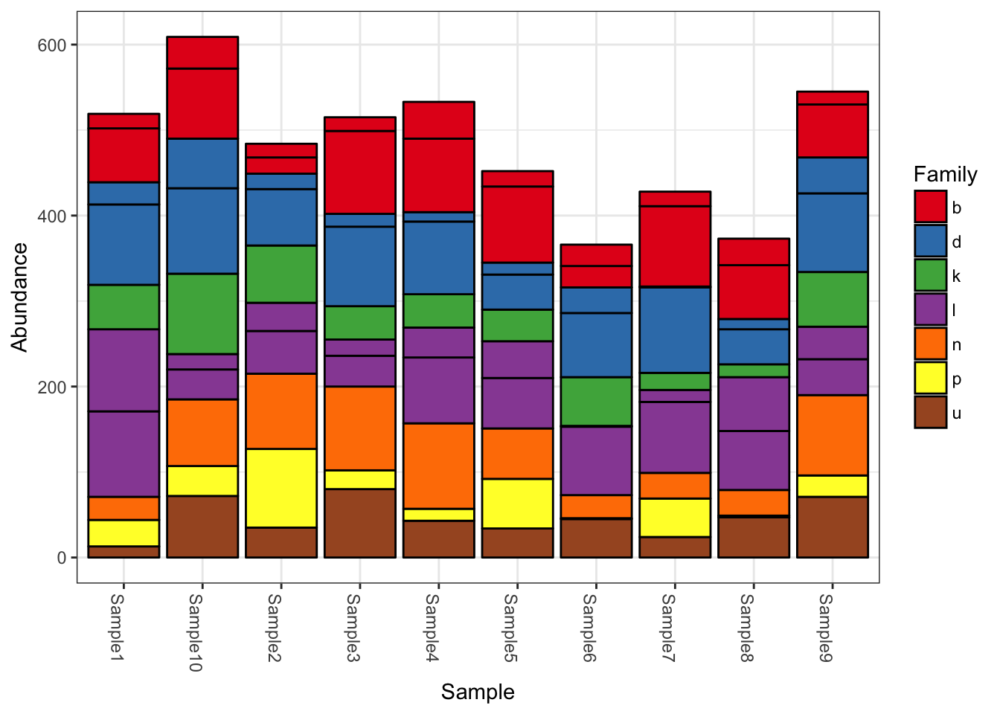
Let’s add to this, pretending we also had other types of data available.
Create random sample data, and add that to the combined dataset. Make sure that the sample names match the sample_names of the otu_table.
sampledata = sample_data(data.frame(
Location = sample(LETTERS[1:4], size=nsamples(physeq), replace=TRUE),
Depth = sample(50:1000, size=nsamples(physeq), replace=TRUE),
row.names=sample_names(physeq),
stringsAsFactors=FALSE
))
sampledata## Location Depth
## Sample1 D 337
## Sample2 B 74
## Sample3 D 68
## Sample4 C 397
## Sample5 B 142
## Sample6 D 970
## Sample7 D 69
## Sample8 C 253
## Sample9 A 497
## Sample10 D 237Now create a random phylogenetic tree with the ape package, and add it to your dataset. Make sure its tip labels match your OTU_table.
library("ape")
random_tree = rtree(ntaxa(physeq), rooted=TRUE, tip.label=taxa_names(physeq))
plot(random_tree)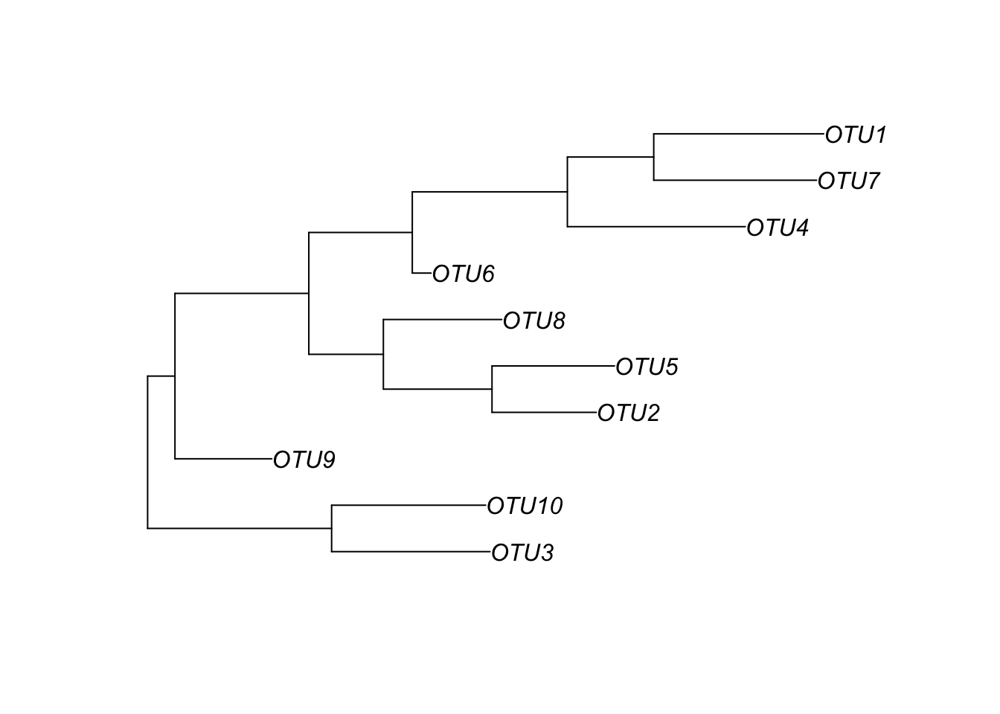
Now let’s combine these altogether. We can do this either by adding the new data components to the phyloseq object we already have by using merge_phyloseq, or we can use a fresh new call to phyloseq to build it again from scratch. The results should be identical, and we can check. You can always do either one with the help from accessor functions, and the choice is stylistic.
Merge new data with current phyloseq object:
physeq1 = merge_phyloseq(physeq, sampledata, random_tree)
physeq1## phyloseq-class experiment-level object
## otu_table() OTU Table: [ 10 taxa and 10 samples ]
## sample_data() Sample Data: [ 10 samples by 2 sample variables ]
## tax_table() Taxonomy Table: [ 10 taxa by 7 taxonomic ranks ]
## phy_tree() Phylogenetic Tree: [ 10 tips and 9 internal nodes ]Rebuild phyloseq data from scratch using all the simulated data components we just generated:
physeq2 = phyloseq(OTU, TAX, sampledata, random_tree)
physeq2## phyloseq-class experiment-level object
## otu_table() OTU Table: [ 10 taxa and 10 samples ]
## sample_data() Sample Data: [ 10 samples by 2 sample variables ]
## tax_table() Taxonomy Table: [ 10 taxa by 7 taxonomic ranks ]
## phy_tree() Phylogenetic Tree: [ 10 tips and 9 internal nodes ]Are they identical?
identical(physeq1, physeq2)## [1] TRUELet’s build a couple tree plots with the new combined data.
plot_tree(physeq1, color="Location", label.tips="taxa_names", ladderize="left", plot.margin=0.3)
plot_tree(physeq1, color="Depth", shape="Location", label.tips="taxa_names", ladderize="right", plot.margin=0.3)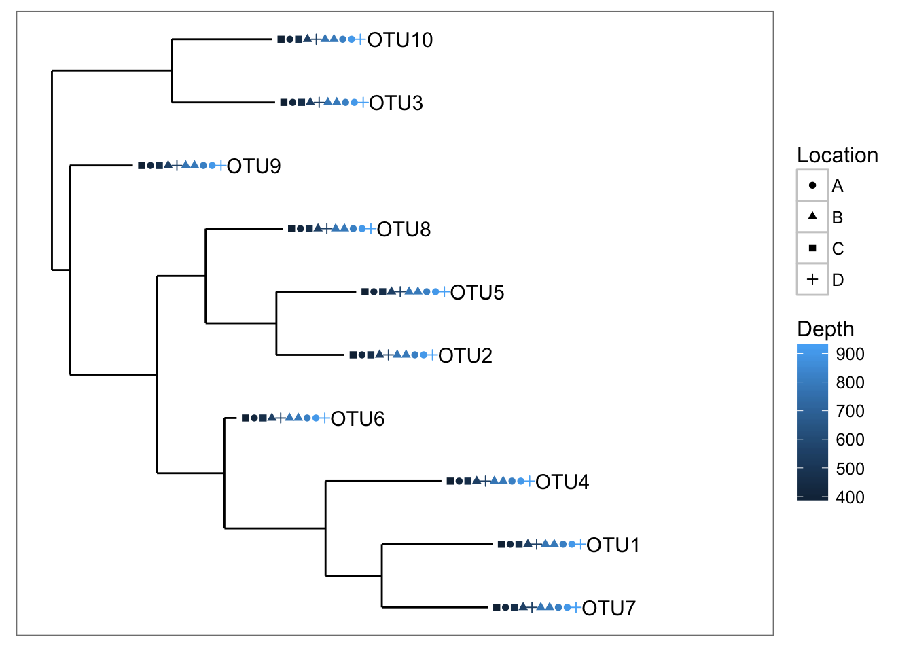
Now how about some heatmaps.
plot_heatmap(physeq1)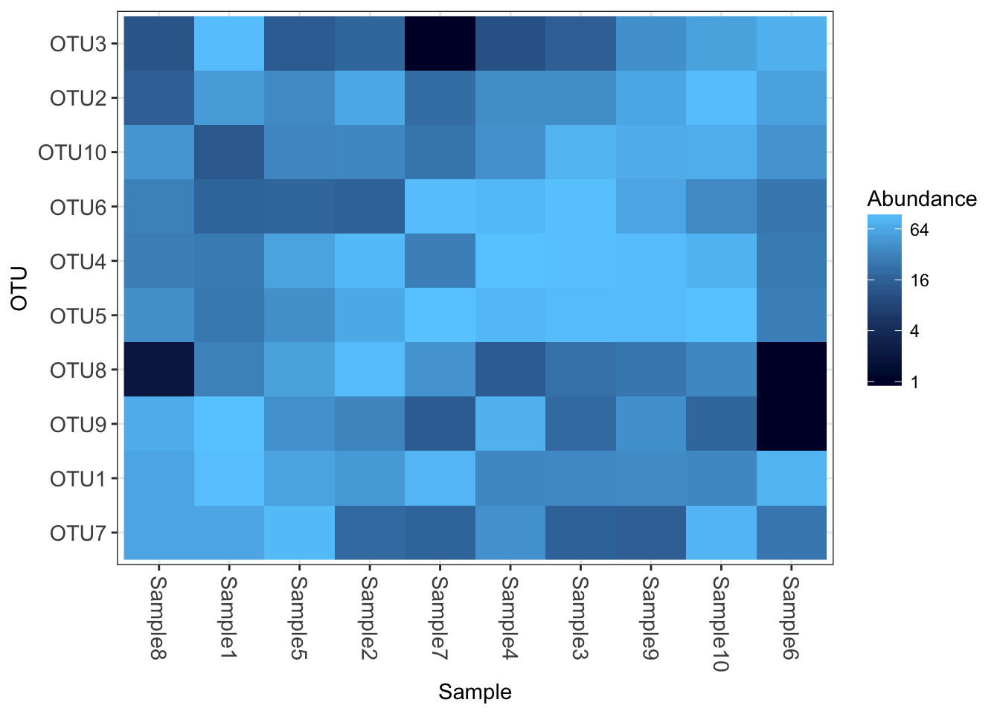
plot_heatmap(physeq1, taxa.label="Phylum")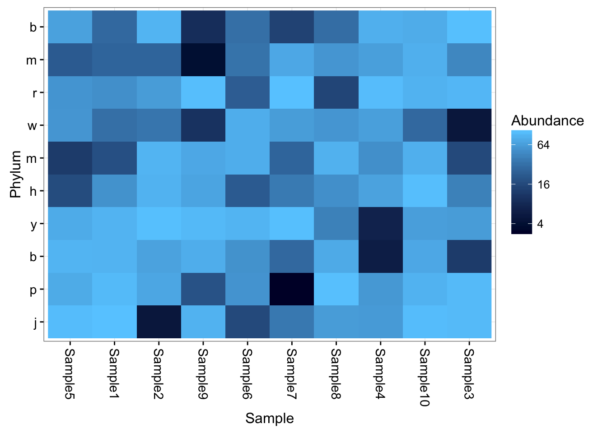
As you can see, you gain access to the all the typical phyloseq tools, but without relying on any of the import wrappers.
MG-RAST
A recent phyloseq issues tracker post discusses and demonstrates importing a .biom file exported by MG-RAST:
https://github.com/joey711/phyloseq/issues/272
The otherwise-recommended import_biom function does not work properly (for now) on this special variant of the BIOM-format. Or said another way, the import_biom function anticipates a different special variant of the BIOM-format the is generated by recent versions of QIIME. The issue post about MG-RAST and phyloseq provides an example for importing the data manually using coercion functions and phyloseq constructors.
microbio_me_qiime (DEFUNCT)
microbio_me_qiime is a function in phyloseq that USED TO interface with QIIME_DB. QIIME-DB IS DOWN INDEFINITELY. The function is listed here for reference only. The following details in this section are the most recent useful tutorial details when the server was still up.
You will need to setup an account to browse the available data sets and their IDs. If you know a datasets ID already, or its assigned number, you can provide that as the sole argument to this function and it will download, unpack, and import the data into R, all in one command. Alternatively, if you have already downloaded the data from the QIIME server, and now have it locally on your hard drive, you can provide the local path to this tar-gz or zip file, and it will perform the unpacking and importing step for you. I’m finding this increasingly useful for creating demonstrations of methods and graphics, and can be a very effective way for you to provide fully reproducible analysis if your own data is already hosted on the microbio.me server.
The import family of functions
import_biom
Newer versions of QIIME produce a more-comprehensive and formally-defined JSON or HDF5 file format, called biom file format:
“The biom file format (canonically pronounced ‘biome’) is designed to be a general-use format for representing counts of observations in one or more biological samples. BIOM is a recognized standard for the Earth Microbiome Project and is a Genomics Standards Consortium candidate project.”
The phyloseq package includes small examples of biom files with different levels and organization of data. The following shows how to import each of the four main types of biom files (in practice, you don’t need to know which type your file is, only that it is a biom file). In addition, the import_biom function allows you to simultaneously import an associated phylogenetic tree file and reference sequence file (e.g. fasta).
First, define the file paths. In this case, this will be within the phyloseq package, so we use special features of the system.file command to get the paths. This should also work on your system if you have phyloseq installed, regardless of your Operating System.
rich_dense_biom = system.file("extdata", "rich_dense_otu_table.biom", package="phyloseq")
rich_sparse_biom = system.file("extdata", "rich_sparse_otu_table.biom", package="phyloseq")
min_dense_biom = system.file("extdata", "min_dense_otu_table.biom", package="phyloseq")
min_sparse_biom = system.file("extdata", "min_sparse_otu_table.biom", package="phyloseq")
treefilename = system.file("extdata", "biom-tree.phy", package="phyloseq")
refseqfilename = system.file("extdata", "biom-refseq.fasta", package="phyloseq")Now that we’ve defined the file paths, let’s use these as argument to the import_biom function. Note that the tree and reference sequence files are both suitable for any of the example biom files, which is why we only need one path for each. In practice, you will be specifying a path to a sequence or tree file that matches the rest of your data (include tree tip names and sequence headers)
import_biom(rich_dense_biom, treefilename, refseqfilename, parseFunction=parse_taxonomy_greengenes)## phyloseq-class experiment-level object
## otu_table() OTU Table: [ 5 taxa and 6 samples ]
## sample_data() Sample Data: [ 6 samples by 4 sample variables ]
## tax_table() Taxonomy Table: [ 5 taxa by 7 taxonomic ranks ]
## phy_tree() Phylogenetic Tree: [ 5 tips and 4 internal nodes ]
## refseq() DNAStringSet: [ 5 reference sequences ]import_biom(rich_sparse_biom, treefilename, refseqfilename, parseFunction=parse_taxonomy_greengenes)## phyloseq-class experiment-level object
## otu_table() OTU Table: [ 5 taxa and 6 samples ]
## sample_data() Sample Data: [ 6 samples by 4 sample variables ]
## tax_table() Taxonomy Table: [ 5 taxa by 7 taxonomic ranks ]
## phy_tree() Phylogenetic Tree: [ 5 tips and 4 internal nodes ]
## refseq() DNAStringSet: [ 5 reference sequences ]import_biom(min_dense_biom, treefilename, refseqfilename, parseFunction=parse_taxonomy_greengenes)## phyloseq-class experiment-level object
## otu_table() OTU Table: [ 5 taxa and 6 samples ]
## phy_tree() Phylogenetic Tree: [ 5 tips and 4 internal nodes ]
## refseq() DNAStringSet: [ 5 reference sequences ]import_biom(min_sparse_biom, treefilename, refseqfilename, parseFunction=parse_taxonomy_greengenes)## phyloseq-class experiment-level object
## otu_table() OTU Table: [ 5 taxa and 6 samples ]
## phy_tree() Phylogenetic Tree: [ 5 tips and 4 internal nodes ]
## refseq() DNAStringSet: [ 5 reference sequences ]In practice, you will store the result of your import as some variable name, like myData, and then use this data object in downstream data manipulations and analysis. For example,
myData = import_biom(rich_dense_biom, treefilename, refseqfilename, parseFunction=parse_taxonomy_greengenes)
myData## phyloseq-class experiment-level object
## otu_table() OTU Table: [ 5 taxa and 6 samples ]
## sample_data() Sample Data: [ 6 samples by 4 sample variables ]
## tax_table() Taxonomy Table: [ 5 taxa by 7 taxonomic ranks ]
## phy_tree() Phylogenetic Tree: [ 5 tips and 4 internal nodes ]
## refseq() DNAStringSet: [ 5 reference sequences ]plot_tree(myData, color="Genus", shape="BODY_SITE", size="abundance")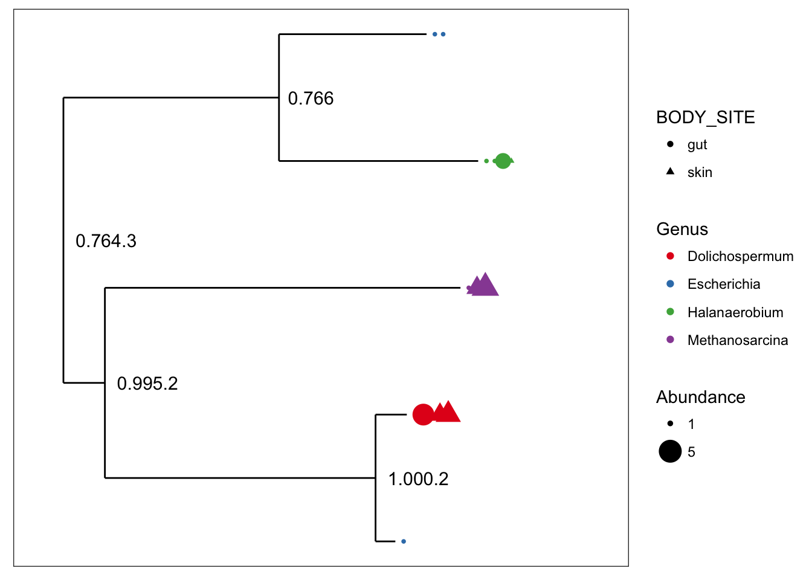
plot_richness(myData, x="BODY_SITE", color="Description")## Warning: Removed 33 rows containing missing values (geom_errorbar).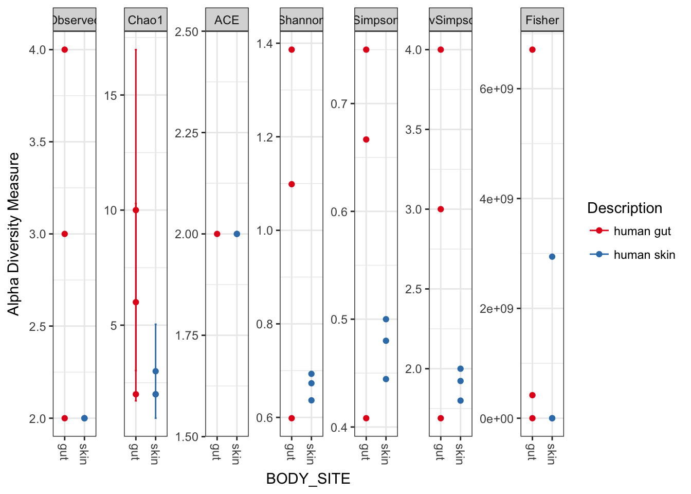
plot_bar(myData, fill="Genus")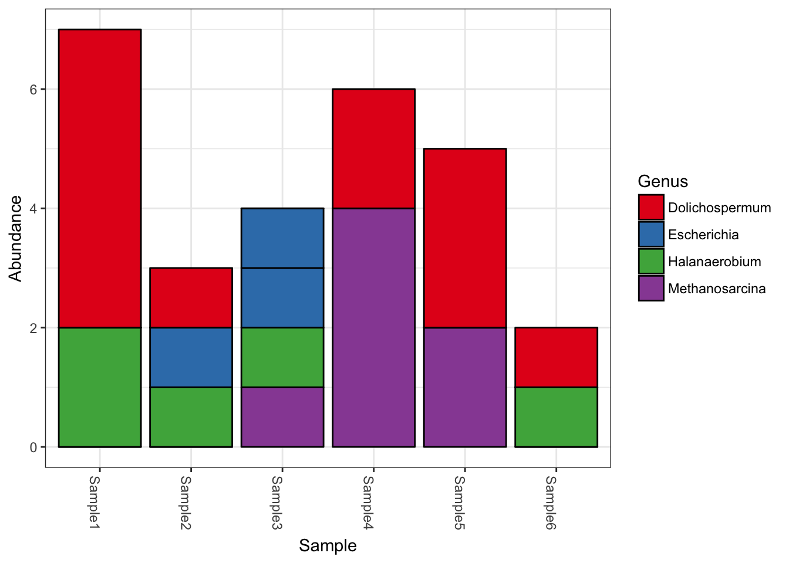
refseq(myData)## A DNAStringSet instance of length 5
## width seq names
## [1] 334 AACGTAGGTCACAAGCGTTGT...TTCCGTGCCGGAGTTAACAC GG_OTU_1
## [2] 465 TACGTAGGGAGCAAGCGTTAT...CCTTACCAGGGCTTGACATA GG_OTU_2
## [3] 249 TACGTAGGGGGCAAGCGTTAT...GGCTCGAAAGCGTGGGGAGC GG_OTU_3
## [4] 453 TACGTATGGTGCAAGCGTTAT...AAGCAACGCGAAGAACCTTA GG_OTU_4
## [5] 178 AACGTAGGGTGCAAGCGTTGT...GGAATGCGTAGATATCGGGA GG_OTU_5import_qiime
QIIME originally produced output files in its own uniquely-defined format. These legacy formats can be imported using phyloseq functions, including especially an OTU file that typically contains both OTU-abundance and taxonomic identity information. The map-file is also an important input to QIIME that stores sample covariates, converted naturally to the sample_data-class component data type in the phyloseq-package. QIIME may also produce a phylogenetic tree with a tip for each OTU, which can also be imported by this function, or separately using read_tree.
See qiime.org for details on using QIIME. While there are many complex dependencies, QIIME can be downloaded as a pre-installed linux virtual machine that runs “off the shelf”.
The different files useful for import to phyloseq are not collocated in a typical run of the QIIME pipeline. See the basics phyloseq vignette for an example of where to find the relevant files in the output directory.
otufile = system.file("extdata", "GP_otu_table_rand_short.txt.gz", package="phyloseq")
mapfile = system.file("extdata", "master_map.txt", package="phyloseq")
trefile = system.file("extdata", "GP_tree_rand_short.newick.gz", package="phyloseq")
rs_file = system.file("extdata", "qiime500-refseq.fasta", package="phyloseq")
qiimedata = import_qiime(otufile, mapfile, trefile, rs_file)## Processing map file...
## Processing otu/tax file...
## Reading file into memory prior to parsing...
## Detecting first header line...
## Header is on line 2
## Converting input file to a table...
## Defining OTU table...
## Parsing taxonomy table...
## Processing phylogenetic tree...
## /Library/Frameworks/R.framework/Versions/3.4/Resources/library/phyloseq/extdata/GP_tree_rand_short.newick.gz ...
## Processing Reference Sequences...qiimedata## phyloseq-class experiment-level object
## otu_table() OTU Table: [ 500 taxa and 26 samples ]
## sample_data() Sample Data: [ 26 samples by 7 sample variables ]
## tax_table() Taxonomy Table: [ 500 taxa by 7 taxonomic ranks ]
## phy_tree() Phylogenetic Tree: [ 500 tips and 499 internal nodes ]
## refseq() DNAStringSet: [ 500 reference sequences ]So it has Let’s try some quick graphics built from our newly-imported dataset, qiimedata.
plot_bar(qiimedata, x="SampleType", fill="Phylum")## Warning in RColorBrewer::brewer.pal(n, pal): n too large, allowed maximum for palette Set1 is 9
## Returning the palette you asked for with that many colors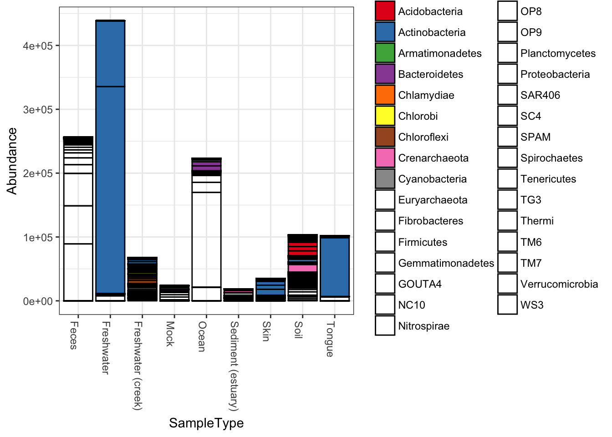
plot_heatmap(qiimedata, sample.label="SampleType", species.label="Phylum")## Warning: Transformation introduced infinite values in discrete y-axis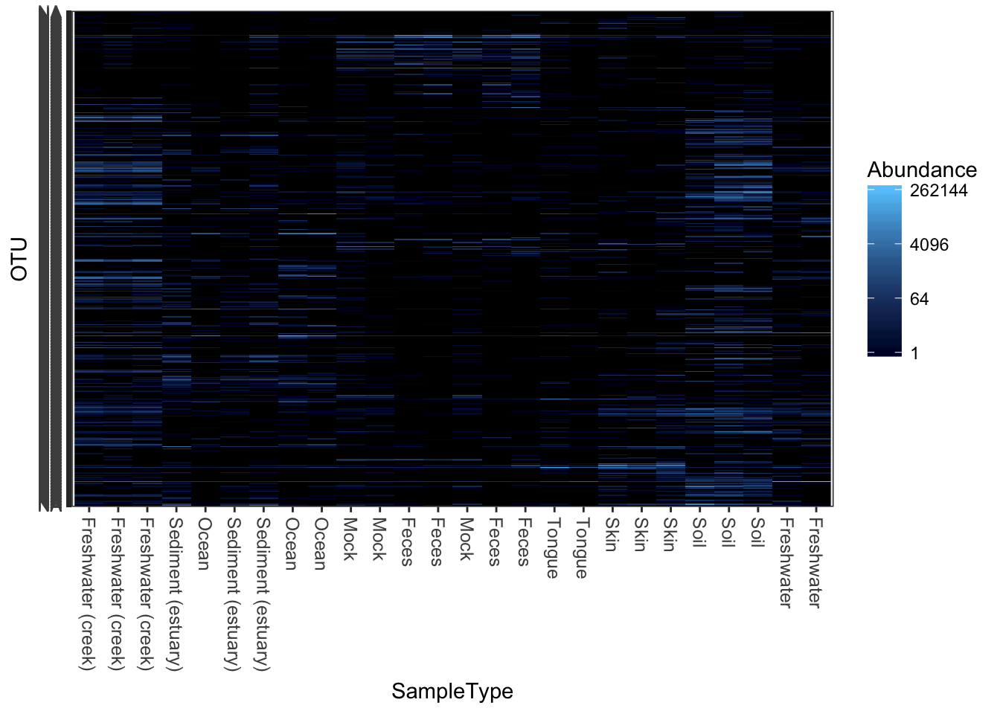
import_mothur
The open-source, platform-independent, locally-installed software package, “mothur”“, can process barcoded amplicon sequences and perform OTU-clustering, among other things. It is extensively documented on a wiki at the mothur wiki.
mothlist = system.file("extdata", "esophagus.fn.list.gz", package="phyloseq")
mothgroup = system.file("extdata", "esophagus.good.groups.gz", package="phyloseq")
mothtree = system.file("extdata", "esophagus.tree.gz", package="phyloseq")
show_mothur_cutoffs(mothlist)## [1] "unique" "0.00" "0.01" "0.02" "0.03" "0.04" "0.05"
## [8] "0.06" "0.07" "0.08" "0.09" "0.10"cutoff = "0.10"
x = import_mothur(mothlist, mothgroup, mothtree, cutoff)
x## phyloseq-class experiment-level object
## otu_table() OTU Table: [ 591 taxa and 3 samples ]
## phy_tree() Phylogenetic Tree: [ 591 tips and 590 internal nodes ]plot_tree(x, color="samples")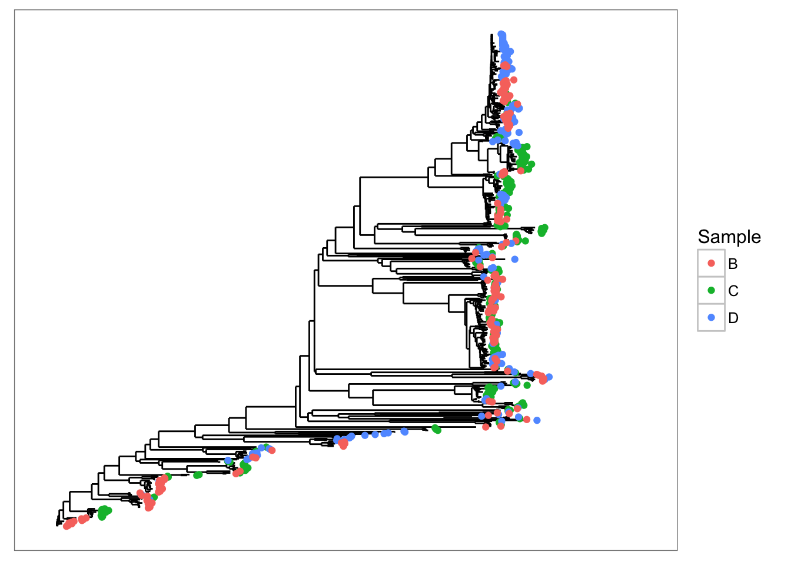
SDF = data.frame(samples=sample_names(x), row.names=sample_names(x))
sample_data(x) <- sample_data(SDF)
plot_richness(x)## Warning: Removed 15 rows containing missing values (geom_errorbar).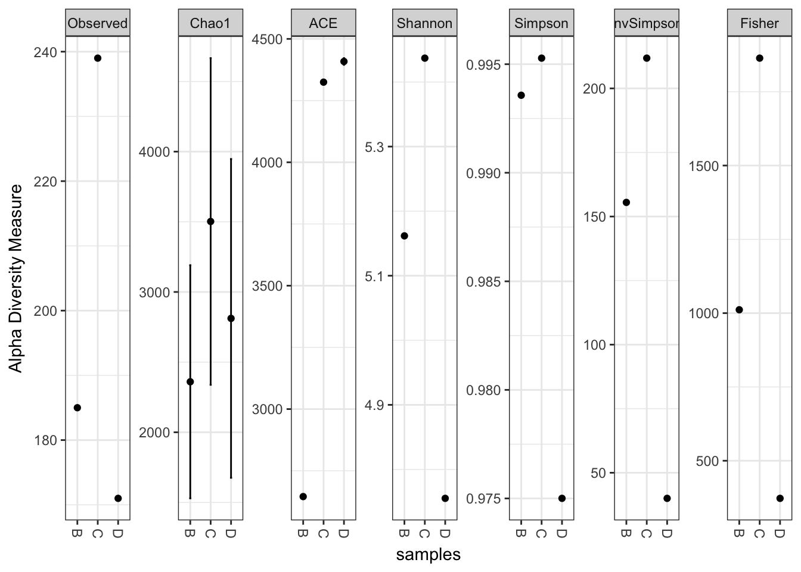
The class and data in the object returned by import_mothur depends on the arguments. If the first three arguments are provided, then a phyloseq object should be returned containing both a tree and its associated OTU table. If only a list and group file are provided, then an “otu_table” object is returned. Similarly, if only a list and tree file are provided, then only a tree is returned (“phylo” class).
Returns just a tree
x1 = import_mothur(mothlist, mothur_tree_file=mothtree, cutoff="0.10")
x2 = import_mothur(mothlist, mothur_tree_file=mothtree, cutoff="0.08")
plot(x1)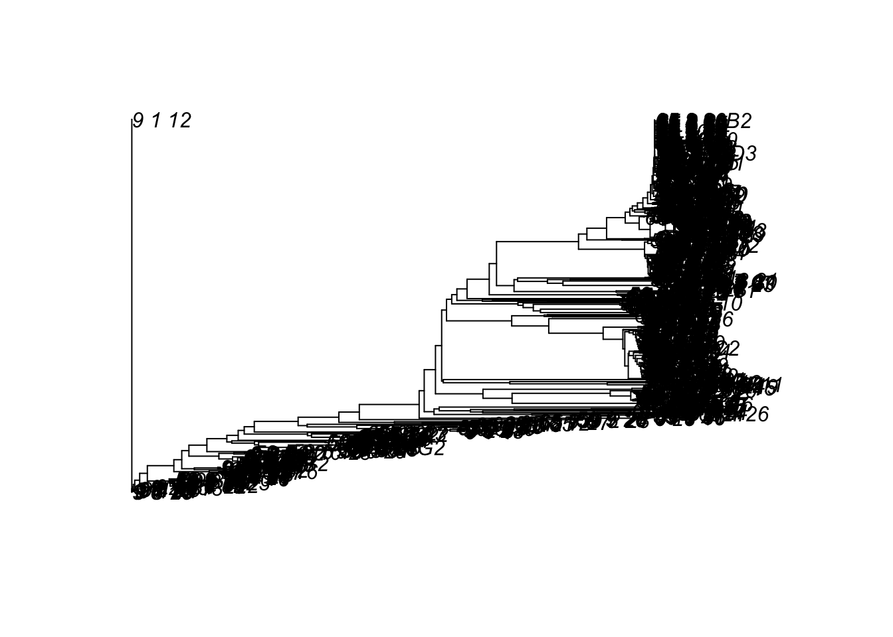
Returns just an OTU table
OTU = import_mothur(mothlist, mothgroup, cutoff="0.08")
dim(OTU)## [1] 591 3head(OTU)## OTU Table: [6 taxa and 3 samples]
## taxa are rows
## B C D
## 9_6_14 2 0 0
## 9_1_14 1 0 0
## 9_1_15 1 0 0
## 9_1_16 1 0 0
## 9_1_18 1 0 0
## 9_1_19 1 0 0import_pyrotagger
PyroTagger is created and maintained by the Joint Genome Institute
The typical output form PyroTagger is a spreadsheet format “.xls”, which poses additional import challenges. However, virtually all spreadsheet applications support the “.xls” format, and can further export this file in a tab-delimited format. It is recommended that you convert the xls-file without any modification (as tempting as it might be once you have loaded it) into a tab-delimited text file. Deselect any options to encapsulate fields in quotes, as extra quotes around each cell’s contents might cause problems during file processing. These quotes will also inflate the file-size, so leave them out as much as possible, while also resisting any temptation to modify the xls-file “by hand”.
A highly-functional and free spreadsheet application can be obtained as part of the cross-platform OpenOffice suite, and works for the above required conversion.
It is regrettable that this importer does not take the xls-file directly as input. However, because of the moving-target nature of spreadsheet file formats, there is limited support for direct import of these formats into R. Rather than add to the dependency requirements of emphphyloseq and the relative support of these xls-support packages, it seems more efficient to choose an arbitrary delimited text format, and focus on the data structure in the PyroTagger output. This will be easier to support in the long-run.
For example, the path to a pyrotagger tab-delimited file might be saved as pyrotagger_tab_file, and can be imported using:
import_pyrotagger_tab(pyrotagger_tab_file)